밀리터리 잡담 (7/1)
게시: 2021-07-01T06:30:43+09:00
<싸구려에게도 역할이 있다> WW2 후반부에 나온 F6F Hellcat에 비해 모든 면이 떨어졌던 F4F Wildcat은 의외로 대전 말까지 생산이 계속됨. 왜 저성능 싸구려 함재기를 계속 생산했을까? 바로 상선을 개조해 만든 소형 저속력 항모인 escort carrier 때문. 호위항모는 18노트로 워낙 느려서 충분한 맞바람을 일으킬 수 없었고 또 너무 작아서 착함 속도가 매우 느려야 했는데, 헬캣이나 콜세어 같은 신형 함재기들은 크고 무겁고 빨라서 호위항모에서의 이착함이 어려웠음. 그래서 와일드캣에게도 역할이 주어진 것. 세상에 쓸모 없는 사람이나 물건은 없음. 제 역할을 찾지 못했을 뿐임. 이들은 북해의 차갑고 거친 바다에서 독일공군 장거리 폭격기를 몰아내고 드넓은 태평양에서는 일본해군기로부터 함대를 지켰음. 레미제라블, 빅토르 위고 작 (배경, 19세기초 나폴레옹 폐위 후의 프랑스) ------- 한번은 마들렌씨(장발장의 가명)는 한무리의 시골 농부들이 쐐기풀을 뽑아내고 있는 것을 보았다. 그는 뿌리가 뽑혀 시들어가는 쐐기풀을 유심히 살펴보더니 입을 열였다. "이건 죽었군요. 하지만 이것들도 활용을 할 수 있다면 좋을텐데요. 어린 쐐기풀은 아주 훌륭한 채소입니다. 자라면 삼이나 대마같은 섬유소가 생기지요. 쐐기풀로 짠 천은 삼베처럼 사용할 수 있습니다. 쐐기풀을 잘게 썰면 닭이나 오리에게 먹일 수 있고, 으깨면 소에게도 먹일 수 있습니다. 쐐기풀의 씨를 사료에 섞어먹이면 가축의 털가죽의 광택이 좋아지지요. 그 뿌리를 소금과 섞으면 아주 예쁜 노란색 염료가 됩니다. 거기에, 쐐기풀은 1년에 2번이나 거둘 수 있는 작물입니다. 게다가 재배에 들어가는 것이 거의 없습니다. 면적도 거의 차지하지 않고, 밭을 갈 필요도 없고, 김매기도 필요없지요. 단 하나 안좋은 점은, 익은 씨가 쉽게 땅에 떨어지므로 수확이 어렵다는 거지요. 아주 적은 수고만 들이면 쐐기풀도 사용할 수 있습니다. 방치하면 미움을 받아 이렇게 뽑히게 되지요. 많은 사람들이 이렇게 쐐기풀과 같은 운명을 겪습니다." 잠시 침묵하던 마들렌씨는 한마디를 덧붙였다. "친구들, 이걸 기억해주십시요. 세상에 나쁜 식물이나 나쁜 사람은 없습니다. 그저 나쁜 경작이 있을 뿐이지요." -------------------------------------------------------------------
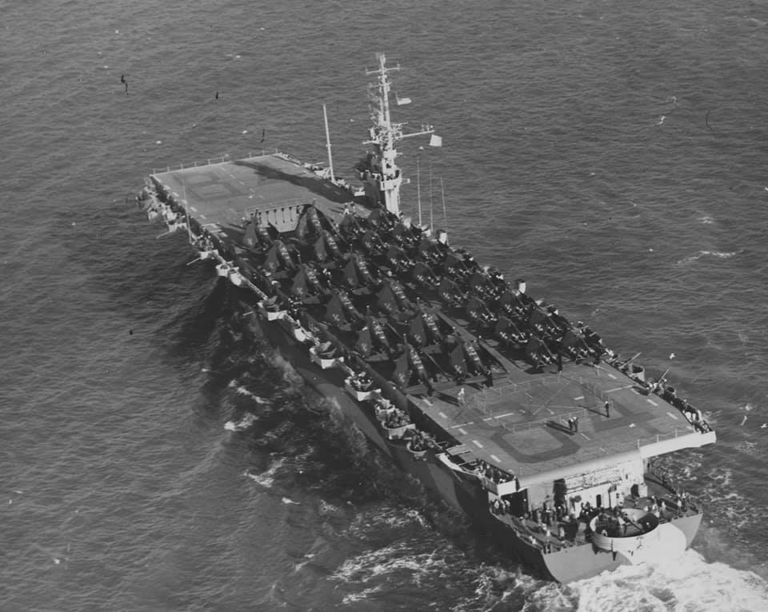
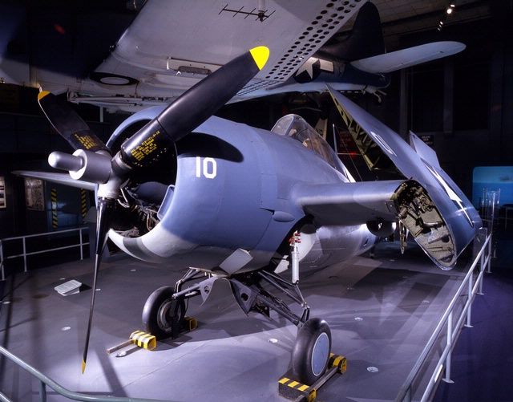
<함재기 콧등과 시야> WW2 당시 함재기 조종사들의 가장 큰 애로 사항 중 하나는 착함. 프로펠러기 특성상 함재기 콧등에는 엔진이 들어있으므로 길 수 밖에 없는데, 그 콧등에 가려져 착함할 때 비행 갑판이 잘 안 보였던 것. 1942년 경 USS RANGER (CV-4)에 착함하는 F4F Wildcat의 조종석. 조종석 바로 뒤에 설치된 카메라로 촬영된 것. 함재기 콧등에 가려진 비행 갑판을 눈으로 확인하려는 조종사가 고개를 옆으로 빼는 것이 보임.
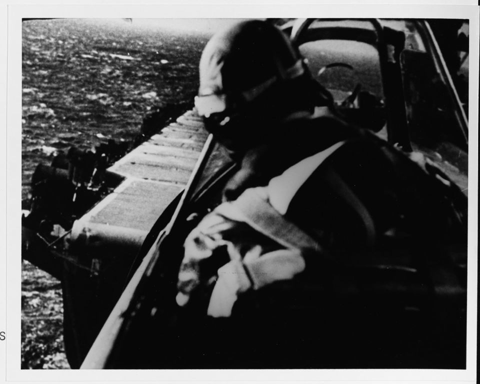
<그래서 영국 함재기들의 조종석은 모두 콧잔등에> 그런 이유에서인지 엔진을 뒤에 둘 수 있는 제트기 시대가 되자, 영국 해군 함재기들은 좀 집착을 한다 싶을 정도로 모두 조종석을 극단적으로 함재기 콧잔등에 위치시켜 탁 트인 시야를 확보하는 것에 열중. 사진1. Hawker Sea Hawk 사진2. Blackburn Buccaneer 사진3. Hawker Siddeley Harrier
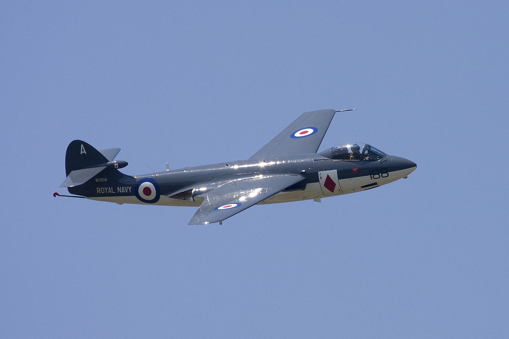
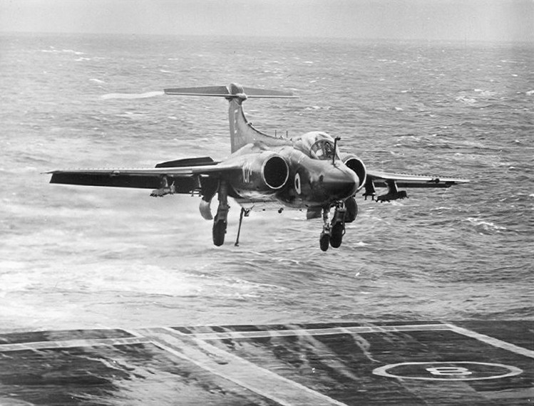
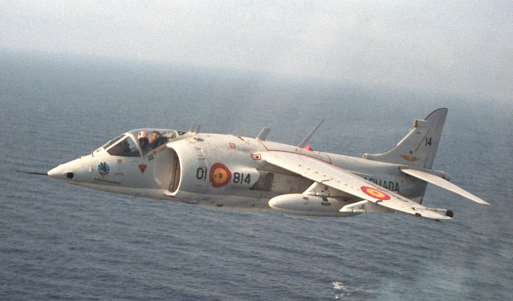
<영국 항모가 뚱뚱한 이유> 현대 영국 성인 남성의 평균 신장은 5피트9인치 (175.26cm). 그러나 WW1 당시 영국 병사들의 평균 신장은 5피트2인치(157.48cm). 상류층 출신 병사들은 5피트6인치(167.64cm). 이는 당시 벨 에포크라는 전성기에도 영국 국민 대부분은 제대로 못 먹었기 떄문. 실제로 많은 12~18세의 소년들이 18세 이상이라고 나이를 속이고 입대했는데 이는 애국심이나 용기 때문이 아니라 배가 고파서. ** 현대 영국 성인 남성의 저 평균 신장에... 평균 몸무게는 83.6kg. 프랑스 성인 남성은 175.6cm / 77.1kg. 그래서 영국 항모와 프랑스 항모를 비교하면 저렇게 프랑스 항모가 날씬한 거임.
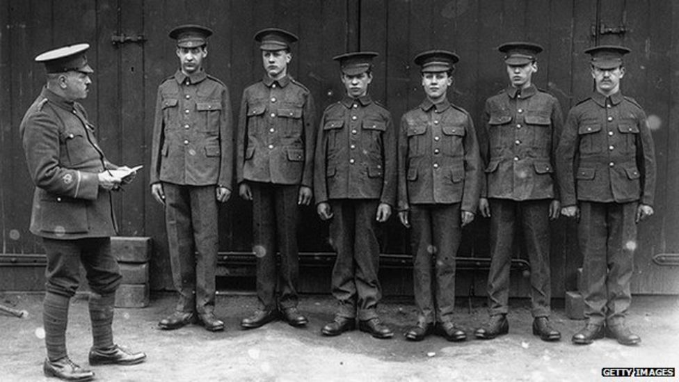
<캐나다군의 급여가 제일 쎄다던데> WW1에서 가장 급여가 높았던 군대는 캐나다군. 그래서 캐나다군은 후방으로 휴가를 가면 당시로서는 꽤 고급이었던 개인 욕조가 딸린 호텔방에서 묵어 프랑스 민간인들을 놀라게 했다고. 대신 성병 감염률이 높아서 영국군 평균의 6배에 달했는데, 캐나다군 지휘부는 이를 낮추고자 성병 진단을 받으면 12개월간 휴가를 금지했고 그 치료 때문에 전선에서 이탈하는 날짜만큼 급여 몰수는 물론 벌금까지 물렸음. ** 급여가 높아야 급여로 장병들을 통제할 수 있음.
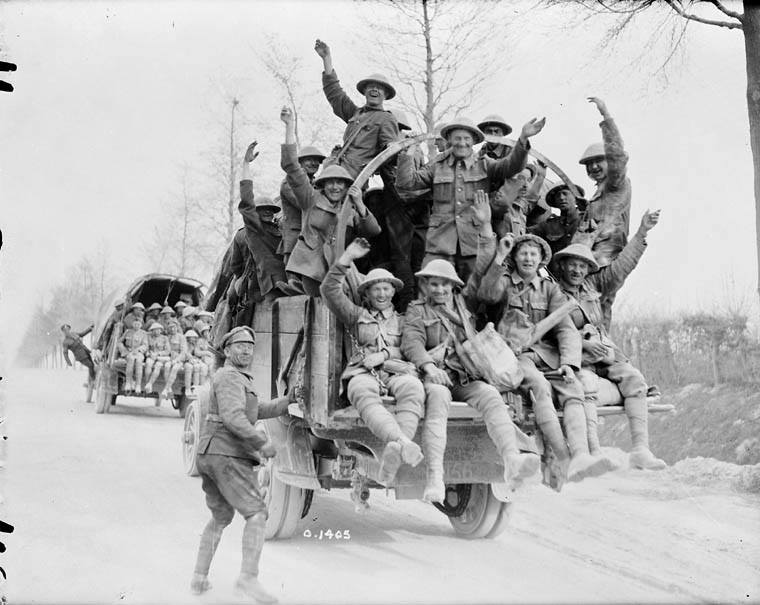
<부자 나라 가난한 나라> 전통적으로 로열 네이비 함재기들은 소속 항모 갑판에 찍힌 Deck Code 글자를 꼬리 날개에 마킹함. 그런데 HMS Queen Elizabeth에 재치된 영국 공군 F-35B에는 그 deck code인 Q가 안 찍혀있음. 그 이유는 페인트 비용 및 그 부분의 스텔스 재처리 비용 때문. 그런데 정작 미해병대 F-35B들은 기체에 HMS Queen Elizabeth라고 정성껏 마크 입혔다고.
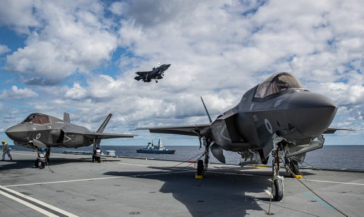
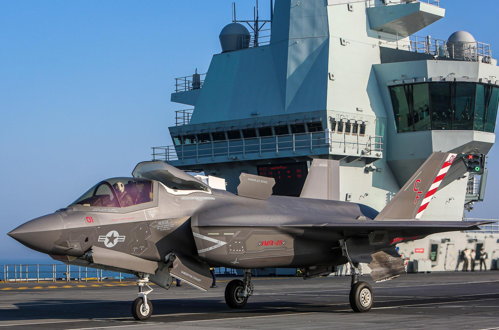
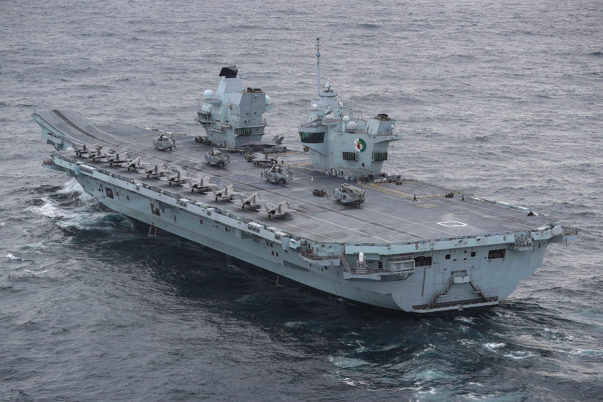
<화장실...> 미사일 순양함 USS Port Royal (CG-73, 만재 9800톤, 32.5노트). 2009년 하와이 연안에서 시험 운항 중 산호초에 좌초되는 불명예. 만조 때 좌초된 것을 끌어내느라 처음에는 물과 연료 180톤을 들어냈으나 꿈쩍도 안 해서 화장실 오수 탱크를 비웠는데 그 양이 무려 26톤... 총원 330명인데 아직 시험 운항 중이었으니 다 타지도 않았을텐데 26톤... 결국 승무원들이 다 내린 뒤에야 순양함이 떴는데 승무원들 무게가 15톤... 아마 200명 남짓 탔던 모양? 오수는 그냥 바다에 버렸기 때문에 순양함을 끌어낸 뒤에도 그 오수가 흩어지기를 기다리느라 한동안 해양 조사관들이 바다에 입수를 못했다고.
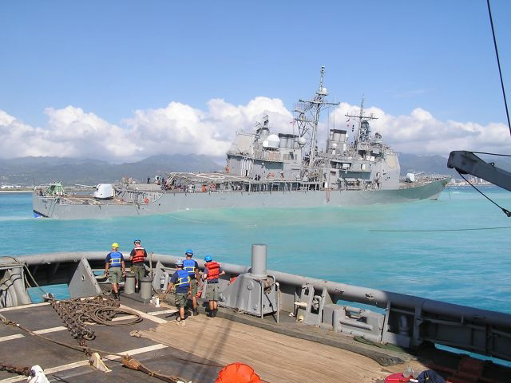
<배보다 사람이 더 중요> USS Sable (IX-81, 7천톤, 18노트). 세계에서 단 2척 뿐인 fresh water 항공모함. 즉 5대호에 떠있던 연습용 항모. 석탄 보일러에 심지어 스크루가 아닌 외륜으로 항행. 그런 이유는 원래 관광용 증기선으로 만든 것을 1942년 해군이 매입해서 훈련용 항모로 개조했기 때문. 함재기와 항모야 공장에서 찍어낼 수 있지만 조종사는 그럴 수 없는데 그걸 해결해준 것이 이 세이블과 USS Wolverine. 3년 동안 1만7천명의 조종사에게 평균 6회 정도의 착함 기회를 주어 함재기 조종사로 키워냄. 이 과정에서 약 300대의 함재기를 말아먹음. 그렇게 양성된 조종사 중에는 미국 대통령인 조지 부시도 있음. (바보 아들 말고 아빠 부시)
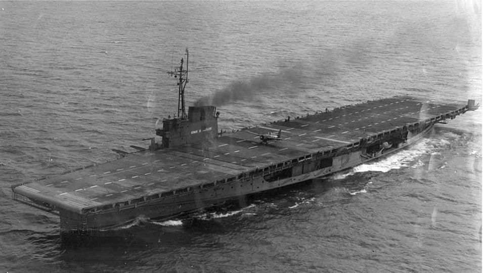
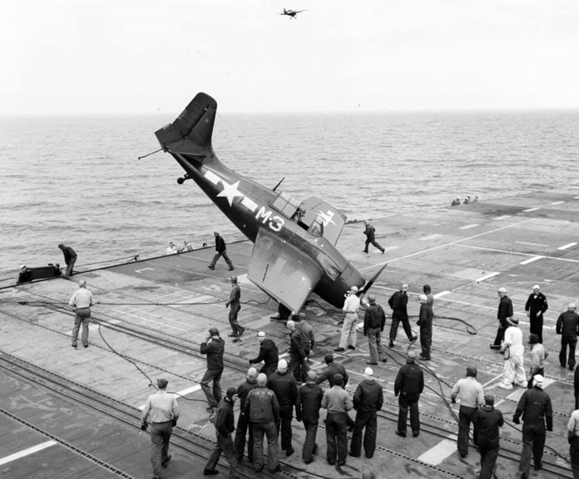
<사람이나 국가나 유치한 건 마찬가지> 사진1 : 프랑스 신문에 난 불영 항공모함 합동훈련 사진2 : 영국 신문에 난 영불 항공모함 합동훈련 사진3 : 실제 크기 사진4 : 영국 애들의 합성 사진 "Ours is bigger."
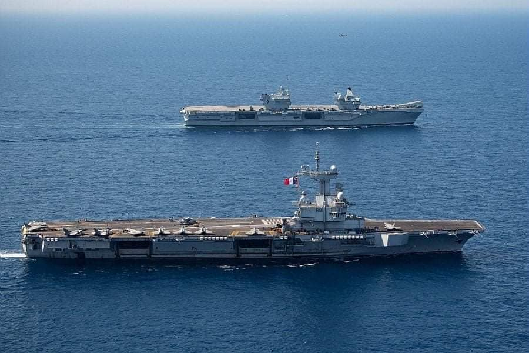
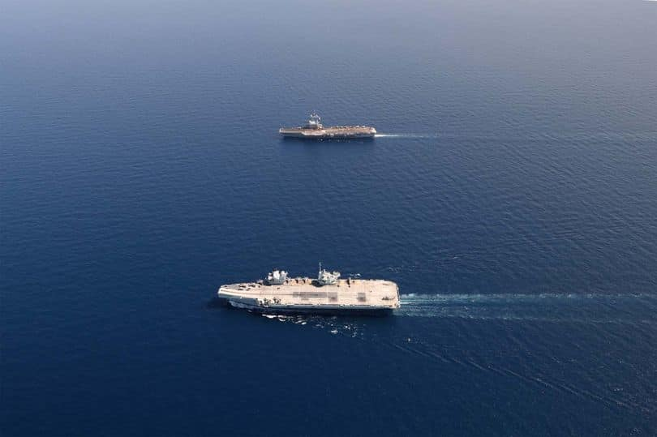
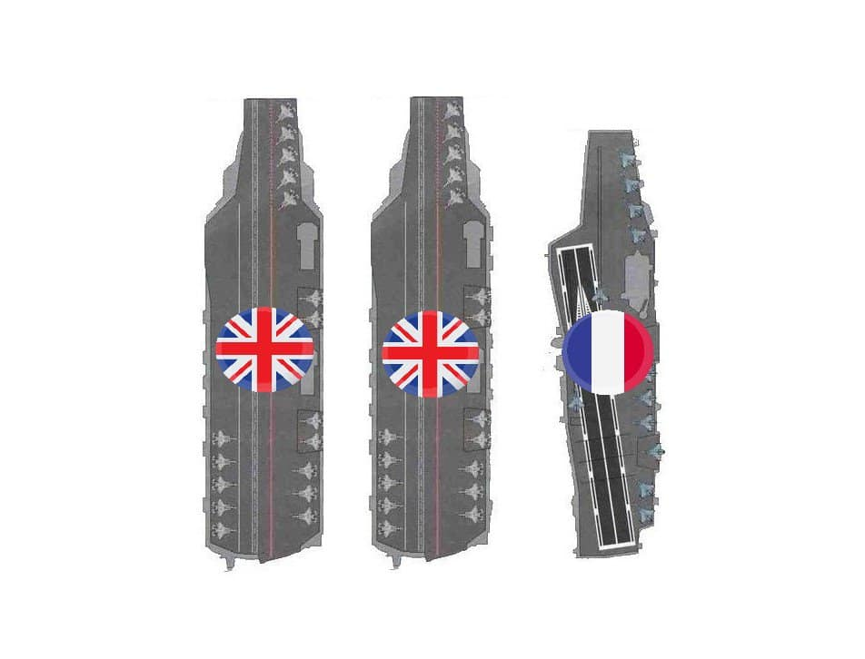
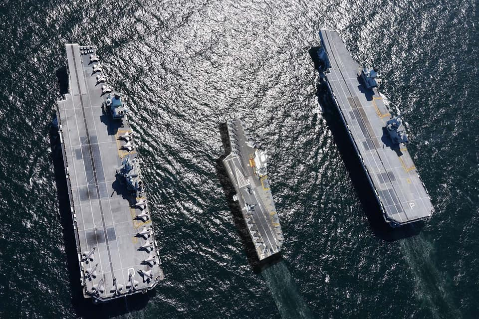
<조종사는 살았다... 어떻게?> 굉장히 끔찍한 착함 사고 같은데 보시다시피 F6F Hellcat이 그다지 부서지지도 않았고 조종사도 생존. 어떻게 그럴 수가? 알고보면 일단 착함은 했는데 직후에 함재기가 왠일인지는 몰라도 슬슬 후진하여 갑판 밖으로 추락했다고. 그래서 함재기 앞쪽이 아니라 뒤쪽이 부서짐. 항모는 호위항모인 USS Charger (CVE-30).
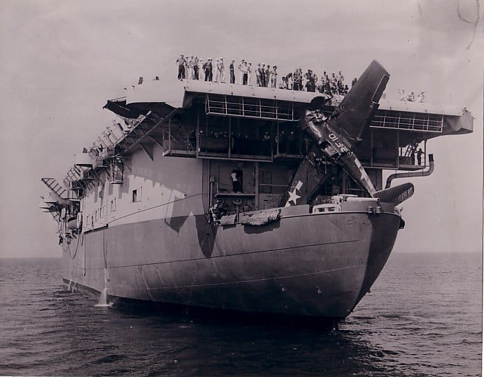
** 내용이 매우 부실하여 죄송. 요즘 회사 일로 주말에도 매우 바쁩니다. 양해 부탁드립니다.